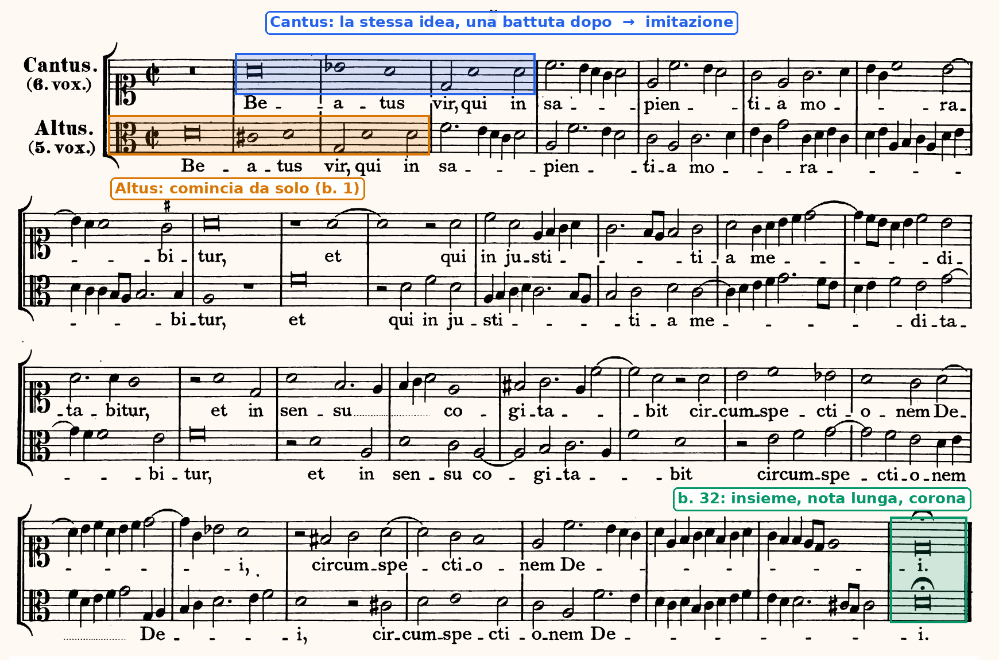
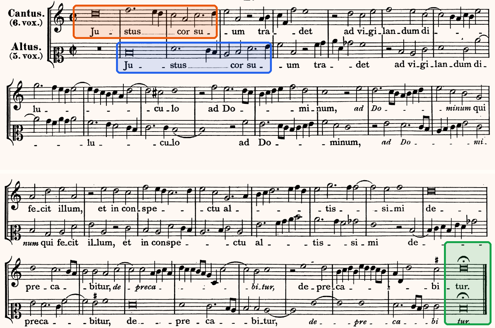
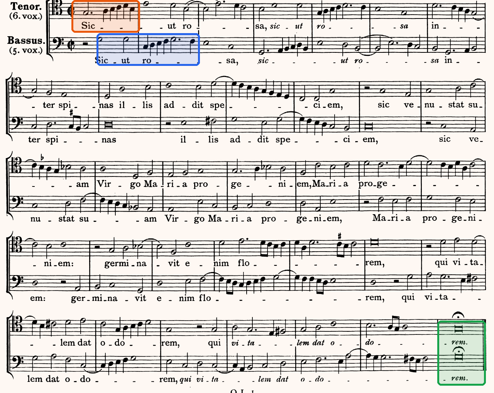

Tre duetti di Orlando di Lasso, un Agnus di Palestrina e un madrigale del Trecento: come entrano le voci, come concludono, e che cosa ne deriva per l’esercizio di prima specie.
Cogliere nei minimi dettagli i caratteri tecnico-formali dello stile.
Carlo Marenco, La composizione del mottetto rinascimentale, p. 1
C3Gli intervalli, pp. 244–247
Sezione C, unità 3, lezione 11 «Gli intervalli giusti»: unisono, quinta e ottava, le consonanze perfette con cui i contrappunti cominciano e finiscono.
Il contrappunto della lezione 1 comincia e finisce all’ottava. Resta da stabilire se sia una necessità o una scelta. Le regole del contrappunto sono state ricavate dalla pratica dei compositori: la risposta si cerca nei brani, e la regola si formula alla fine.
Le voci partono insieme o una entra prima? Dopo quanto entra l’altra, e con quale materiale?
Nel primo punto in cui suonano entrambe, quale intervallo le separa?
Le voci concludono insieme? Su quale durata, su quale intervallo, con quale movimento?
Che cosa resta uguale nei brani e che cosa cambia?
La quarta domanda è lo scopo delle prime tre: senza il confronto, l’analisi resta un elenco di osservazioni.
Orlando di Lasso (1532–1594) pubblicò a Monaco, nel 1577, una raccolta di ventiquattro brani a due voci, dodici con testo e dodici senza; nel 1604 i figli li ristamparono nel Magnum opus musicum. Erano musica da eseguire e, insieme, materiale di studio: nel Cinquecento il contrappunto si imparava cantando brani reali.
Non c’è una terza voce né un basso continuo a completare l’armonia: tutto ciò che si sente è nel rapporto fra le due linee, come nell’esercizio di prima specie.
Le partiture sono quelle dell’edizione Haberl (1894), riprodotte e analizzate in C. Marenco, La composizione del mottetto rinascimentale, sezione «La composizione a due voci»: Beatus vir p. 23, Justus cor suum tradet p. 28, Sicut rosa p. 58. I tre brani non hanno una registrazione nel catalogo: si leggono in partitura, e gli ascolti della lezione sono due brani del catalogo con la stessa struttura.
Due voci acute, Cantus e Altus, entrambe in chiave di do.

O. di Lasso, «Beatus vir qui in sapientia morabitur», a due voci (1577), ed. Haberl 1894.
L’Altus, la voce più grave, comincia da solo alla b. 1. Il Cantus tace per l’intera prima battuta ed entra alla seconda con la stessa melodia e le stesse parole, in un registro più acuto: è un’imitazione a distanza di una battuta. Le due voci concludono insieme su una nota lunga, con la corona (b. 32).
Anche qui Cantus e Altus.

O. di Lasso, «Justus cor suum tradet», a due voci (1577), ed. Haberl 1894.
I ruoli sono invertiti rispetto a Beatus vir: comincia il Cantus, da solo, con una nota lunga su «Ju-»; l’Altus tace per tutta la prima battuta ed entra alla seconda con lo stesso inizio. La distanza è ancora di una battuta. Le due voci concludono insieme sulla nota lunga con la corona (b. 32).
In due brani su due l’inizio è costruito allo stesso modo, ma la voce che comincia cambia: la costante riguarda il modo di entrare, non la voce che entra per prima.
Le voci sono Tenor e Bassus, in due chiavi diverse: il duo non presuppone un organico fisso.

O. di Lasso, «Sicut rosa inter spinas», a due voci (1577), ed. Haberl 1894.
Comincia il Tenor, da solo. Il Bassus entra dopo una pausa di minima, cioè dopo mezza battuta, e nella battuta successiva riprende la salita per grado congiunto con cui il Tenor ha aperto («Sic-ut»). Le due voci concludono insieme sulla nota lunga con la corona (b. 35).
La distanza d’entrata non è fissa: una battuta, una battuta, mezza battuta. Resta costante che la seconda voce entri dopo la prima, con la stessa idea.
Nei tre duetti una voce entra da sola e la seconda entra dopo, ripetendo la stessa idea. Il procedimento si chiama imitazione: nella forma più semplice, «l’intero episodio si basa su un unico frammento ripetuto di voce in voce e concluso dal contrappunto libero».
C. Marenco, La composizione del mottetto rinascimentale, p. 4 (l’«imitazione monomotivica»).
Contare le voci che entrano e indicare, per ciascuna, la battuta d’entrata; poi verificare sul rigo che la salita di quattro note del contralto (fa–sol–la–si♭) torna nelle altre voci.
Le entrate sono quattro: contralto (b. 1), tenore una quinta sotto dopo una breve (b. 2), soprano (b. 4), basso (seconda metà della b. 8). Le distanze sono diverse, come nei duetti di Lasso. L’imitazione si studia nell’unità 9, sull’Agnus di Palestrina in partitura (ora 62).
Indicare la nota con cui cominciano le due voci e le due battute in cui, dopo un movimento contrario, si ritrovano all’ottava.
Le due voci partono insieme, sulla stessa nota: è l’inizio dell’esercizio di prima specie, e il repertorio lo conosce. Alle bb. 6–7 e 9–10 la frase si appoggia due volte all’ottava, ogni volta da una sesta e per moto contrario di grado. Le note ribattute e i valori brevi appartengono allo stile del madrigale: l’esercizio li esclude.
Nei tre duetti di Lasso le voci arrivano insieme su una nota più lunga delle precedenti, con la corona. Nell’Agnus di Palestrina si vede anche come ci arrivano.
Nell’ultima battuta il tenore sale di semitono, mi–fa, mentre il basso scende di grado, sol–fa: le due voci passano dalla sesta maggiore all’ottava per moto contrario. È la clausola: «il movimento semitonale ascendente della parte superiore dava origine alla clausula cantizans (del cantus) in concomitanza con quello discendente del tenor (la clausula tenorizans)».
C. Marenco, Manuale d’armonia, p. 191. La stessa chiusa sesta → ottava è in «Fra mille corvi», bb. 6–7 (la3–fa♯4 → sol3–sol4).
La clausola diventa la penultima battuta dell’esercizio di prima specie (lezioni 5 e 7) e, a quattro parti, la cadenza autentica: la sensibile che sale alla tonica, il basso che va alla tonica (ora 22).
Nei duetti di Lasso e nell’Agnus di Palestrina le voci non cominciano insieme; nell’esercizio di prima specie sì. Le due situazioni sono diverse.
Le due voci hanno lo stesso numero di note, tutte di uguale durata: partono insieme per costruzione. Un’entrata ritardata eliminerebbe la prima verticale, cioè proprio la scelta che l’esercizio chiede di fare.
Le voci hanno durate diverse e libere. Una voce può entrare dopo l’altra, e la seconda entrata diventa un evento udibile; ma anche il repertorio conosce l’inizio simultaneo («Fra mille corvi»).
Applicare al repertorio le regole dell’esercizio, o viceversa: concludere che Lasso «non segue le regole», oppure cominciare un esercizio di prima specie con una voce sola. Il contrappunto di specie è un percorso didattico che isola un problema alla volta, non una riduzione della musica del Cinquecento.
L’inizio: le due voci partono insieme su una consonanza perfetta; con il contrappunto sopra, «la prima nota può essere all’ottava o alla quinta poiché entrambi gli intervalli confermano la tonalità», e anche all’unisono. La fine: insieme, su unisono o ottava; la quinta finale lascia la conclusione sospesa. «Sul primo e sull’ultimo suono del cantus si avranno sempre consonanze perfette».
F. Salzer – C. Schachter, Contrappunto e composizione, § 1.2.12, p. 20 e § 1.2.18, p. 21. Il contrappunto sotto il canto dato ha un inizio diverso: lezione 7.
Cominciare con una terza perché «suona più piena»: la terza appartiene a due triadi diverse (do–mi a do maggiore e a la minore) e non afferma la tonalità; la consonanza perfetta sì.
Sul rigo della slide «Insieme, all’unisono» scrivere il numero dell’intervallo sul primo movimento di ciascuna delle bb. 1, 5, 6, 7, 8, 9 e 10 (ridotto entro l’ottava). Poi indicare il moto delle due voci fra le bb. 6 e 7 e fra le bb. 9 e 10 (retto, parallelo, obliquo, contrario) e il nome della formula.
Per ciascuno dei tre canti dati (i primi due sono quelli della slide «Tre canti dati» della lezione 1, il terzo è quello del lavoro guidato), sul rigo di violino sopra di esso scrivere la prima nota del contrappunto e le ultime due: inizio su una consonanza perfetta, penultima battuta sulla sesta maggiore, fine sull’ottava. Sotto ogni nota il numero dell’intervallo. Le battute 2–6 restano vuote.
Nei duetti di Lasso e nell’Agnus di Palestrina una voce entra da sola e la seconda la imita; altrove le voci partono insieme («Fra mille corvi»). In conclusione le voci arrivano insieme, e la chiusa è la clausola: sesta maggiore → ottava, per moto contrario di grado.
Si comincia insieme su una consonanza perfetta (ottava, quinta o unisono, con il contrappunto sopra). Si conclude insieme su ottava o unisono, preceduti dalla sesta maggiore.
La lezione 3 è di canto: il canto dato dell’unità, cantato e scritto a memoria. In fondo alla pagina, i compiti e il solfeggio di chiusura.
Compiti per la prossima volta
Scrivi sopra il canto dato, in chiave di violino, un contrappunto di prima specie: dieci semibrevi, una per battuta, incolonnate.
Le condizioni note dalle lezioni 1 e 2: inizio su ottava, quinta o unisono; penultima battuta sulla sesta maggiore (il fa♯ sopra il la); fine sull’ottava; solo consonanze, nessuna quarta; nessuna nota ripetuta, nessun incrocio; ogni quinta e ogni ottava raggiunta per moto contrario. Sotto ogni battuta il numero dell’intervallo.
Sul quaderno, a matita. La foto del lavoro finito va su Classroom. Nel Workbook: apri l’esercizio C2-U2-L2-05 ↗
Compiti per la prossima volta
n. 60 e n. 61 parlato · n. 62 e n. 63 cantato · n. 64 e n. 65 ritmico
Ogni pezzo a tempo, senza fermarti: il parlato a nomi, il cantato prendendo il primo suono dalla tastiera, il ritmico battendo la pulsazione.
Scrivi la melodia sul quaderno, in chiave di violino: otto battute in 4/4, do maggiore. Il primo suono è sol. Prima il riferimento, poi tutto due volte, ogni coppia di battute due volte, il collegamento 1–4, 3–6 e 5–8, e tutto per controllare.
Il riferimento: accordo di tonica e primo suono
Il dettato · otto battute
Le sezioni (riferimento, tutto, le coppie, il collegamento) si ascoltano una per una e si ripetono quanto serve; le fasi fanno la procedura della classe, con gli annunci e le pause, da qualunque punto.
Sul quaderno scrivi in testa la sigla C2-D-U02-L2. Si corregge all’inizio della prossima lezione.
Compiti per la prossima volta
Scrivi un contrappunto di prima specie (nota contro nota) sopra il canto fermo, in modo eolio (finale la): otto battute. Comincia su una consonanza perfetta, alla cadenza la sensibile sale alla finale, niente quinte e ottave consecutive.
Sul quaderno, con la sigla C2-CP-U02-L2 in testa; la foto va su Classroom.
Scritto: Dieci note sopra un canto dato, in sol maggiore (Workbook, esercizio C2-U2-L2-05), sul quaderno; la foto va su Classroom. Solfeggio dal quaderno di lettura: parlato n. 60, 61; cantato n. 62, 63; ritmico n. 64, 65 (a tempo, senza fermarsi). Dettato C2-D-U02-L2 dalla pagina della lezione (sezioni da ascoltare, o le fasi della procedura guidata), sul quaderno con la sigla. Contrappunto di prima specie sul canto fermo (C2-CP-U02-L2).
In classe
A nomi, a tempo, con la mano che batte. Chi si ferma riparte dalla battuta dopo.
Apri il n. 56 nel quaderno di lettura ↗ chiave di violino · 4/4
In classe
Si prende il tono dalla tastiera, si canta insieme; poi a gruppi.
Apri il n. 57 nel quaderno di lettura ↗ chiave di violino · 4/4 · sol maggiore
Apri il n. 58 nel quaderno di lettura ↗ chiave di violino · 3/4 · do maggiore
In classe
Tutti insieme, battendo la pulsazione. Poi a file, due battute a testa.